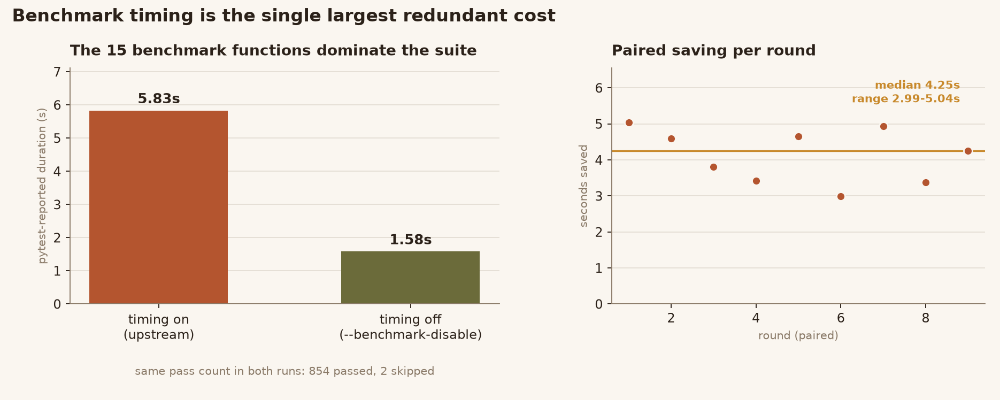
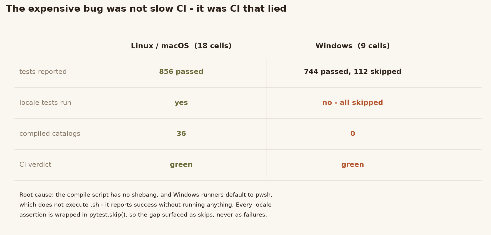
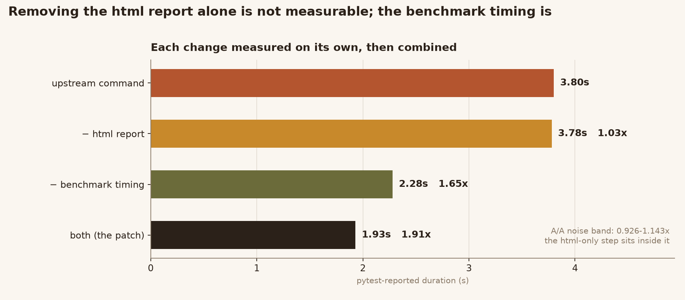
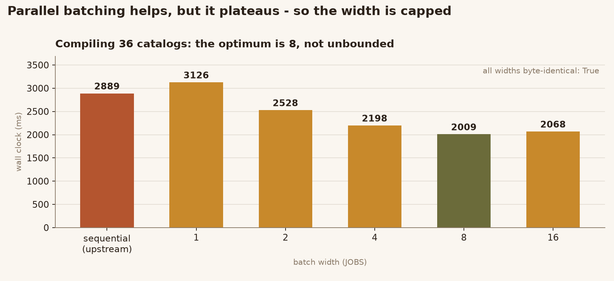
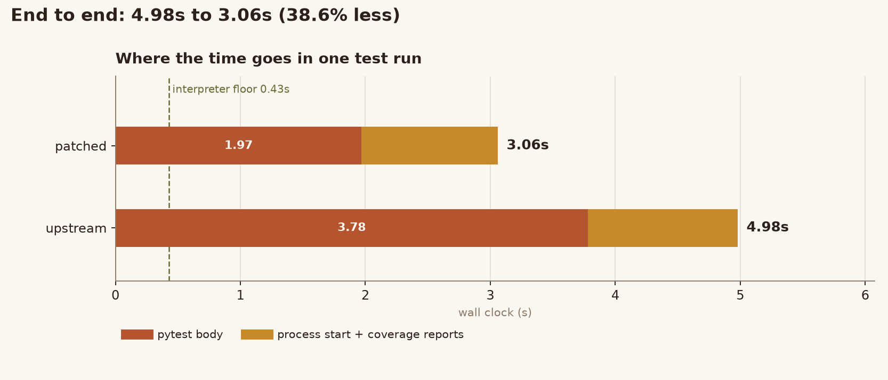
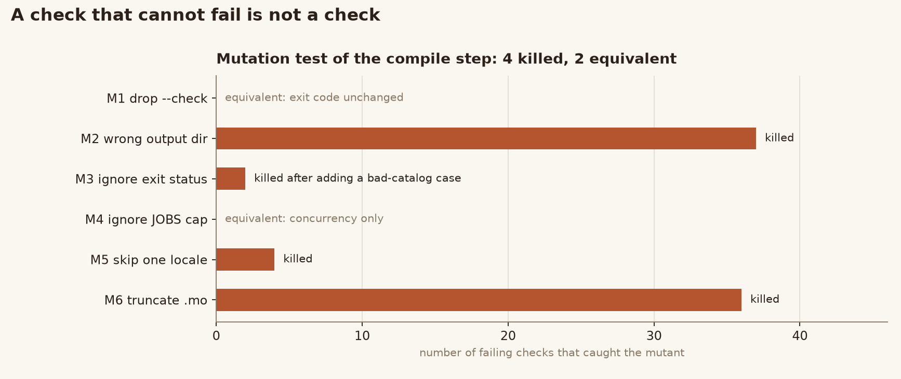

Two thirds of the CI matrix — every Windows cell — reported green while running none of the 112 locale tests.
Upstream python-humanize/humanize
at 785e5dc · MIT · library code untouched ·
source & patch
scripts/generate-translation-binaries.sh has no shebang. GitHub's
default shell on Windows is pwsh, and pwsh does not
execute a .sh file: it exits 0 having done nothing. The script that
compiles the translation catalogs therefore never ran on Windows.
tests/test_i18n.py wraps every locale assertion in
pytest.skip() when a catalog is missing, so the missing catalogs
surfaced as skips, never as failures. Linux and macOS reported
856 passed; the nine Windows cells reported
744 passed, 112 skipped and were marked green.
The fix has two halves, and both are required. Install
gettext so msgfmt exists, and run the script under
bash so it is executed at all. A new step then fails the job if
fewer than 36 catalogs were produced, so this cannot silently regress.
| variant | pytest duration | ratio | verdict |
|---|---|---|---|
| upstream command | 3.80s | 1.00× | — |
| minus html report | 3.78s | 1.03× | inside the noise band |
| minus benchmark timing | 2.28s | 1.65× | real |
| both (the patch) | 1.93s | 1.91× | real |
A/A control (two byte-identical copies of the upstream command) spanned 0.926–1.143×, so the html-only step is inside the noise band. It is removed because it is dead output, not because it moves the total on its own.
Width 1 forks once per file and is slower than the plain loop.
The gain plateaus at 8, which is why the batch width is capped instead of unbounded.
Every width produces byte-identical .mo files.
| report | median | consumer |
|---|---|---|
| coverage term | 395 ms | log only |
| coverage xml | 418 ms | uploaded to codecov |
| coverage html | 583 ms | nothing reads it |





